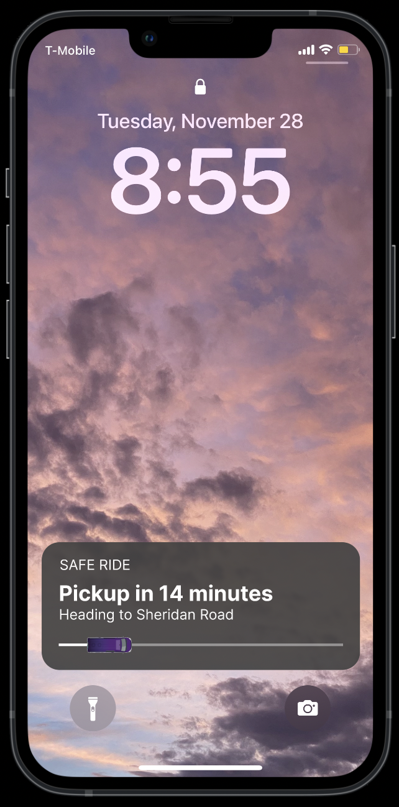
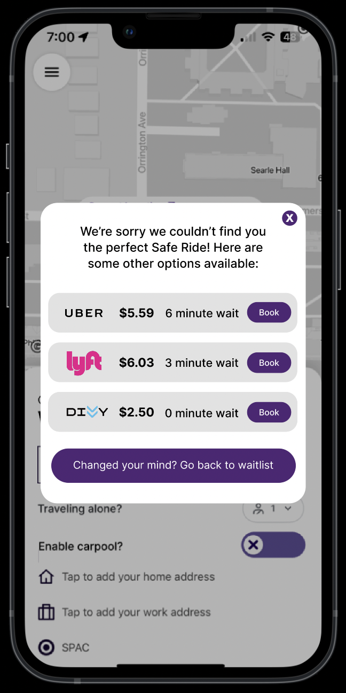
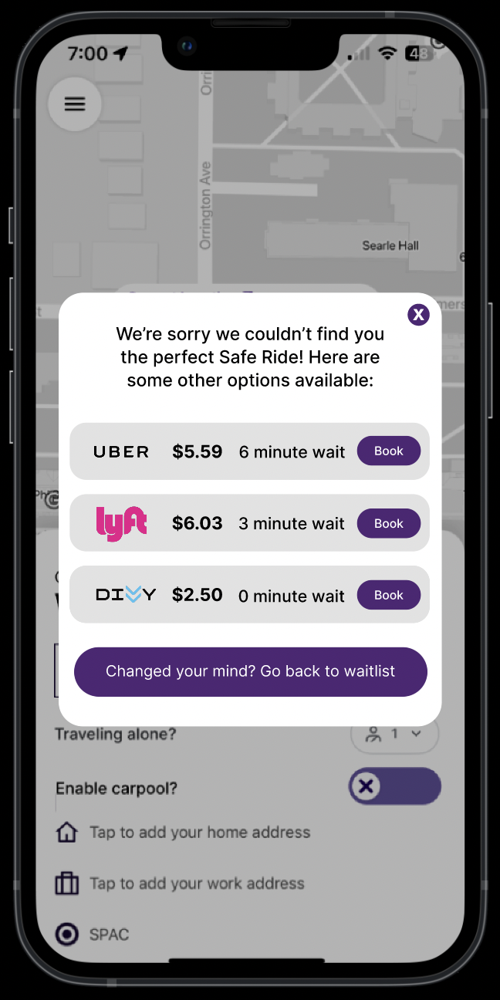
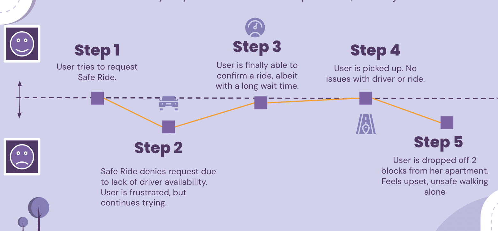
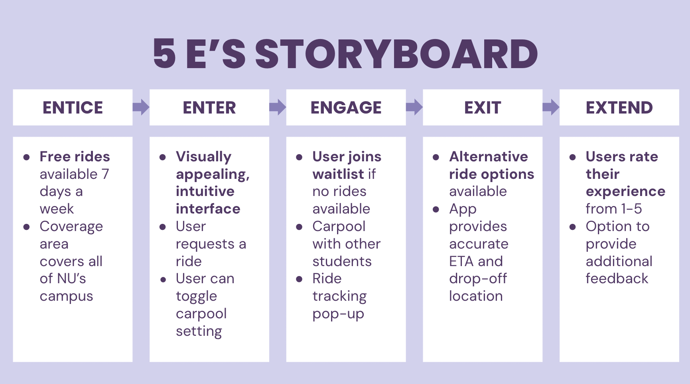
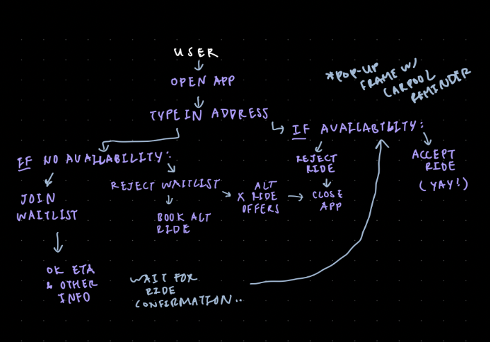
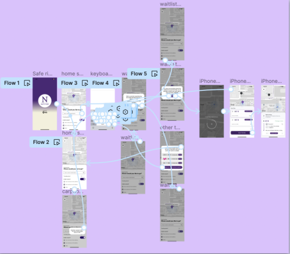

Welcome to Safe Ride 2.0
designed by Jade Wang. DSGN208 Final Prototype. Fall 2023
Overview
Students are tired of long wait times and poor communication when they try to book their rides. SafeRide 2.0 addresses these concerns with features to improve accessibility to rides and live-time trip updates. With an improved but familiar interface, students can rely on SafeRide 2.0 to provide a seamless rider experience every night.
Watch the demo below to learn more.
Designed on Figma
Updated App Features
- Waitlist System: If no immediate rides are available, users will be invited to join the waitlist. If users accept, they will receive a predicted spot in the queue and estimated time for pickup. If users do not accept, alternative transportation options will be suggested.
- Carpool Option: To decrease wait time, users can opt in to shared rides with students commuting to nearby locations. Users can always toggle their carpool settings off and on depending on how comfortable they are riding with other students on a particular night. Carpool-booked rides will indicate how many riders the user should expect in the vehicle.
- Lock Screen Reminder: To remind users of their pickup times, riders can now see driver ETA from the live notification on their lock screen. Corresponding vibration notifications can be enabled in phone settings. 
 

Design Process
To collect user research for our prototypes, here are the design-thinking tools we used.
- Journey Maps: To better understand the specific pain points users were experiencing, we created emotional journey maps for our interviews. Below is an example of the SafeRide experience from the perspective of a female junior living off campus. This tool helped us visualize where we could optimize the rider experience. 
- User Flows: Using Notability, we sketched out the ideal user flow with Palka, our TA. This helped us identify what screens we needed to create in Figma.
- Storyboards: We wanted to make sure our app was taking care of users, from beginning to end. By logging our goals for each step of the user experience on the 5E's chart, we held ourselves accountable to the user throughout iterations. 


Next Steps
It's not just SafeRide-- campus transportation as a whole needs to be improved. Some other considerations to explore in the future:
- Driver Incentives: implemenet driver-designated parking zones, meal plans and subsidized gas to keep drivers engaged.
- Campus Shuttles: increase student awareness of shuttle routes by publicizing time tables on social media and upgrading bus shelters to reduce reliance on SafeRide.